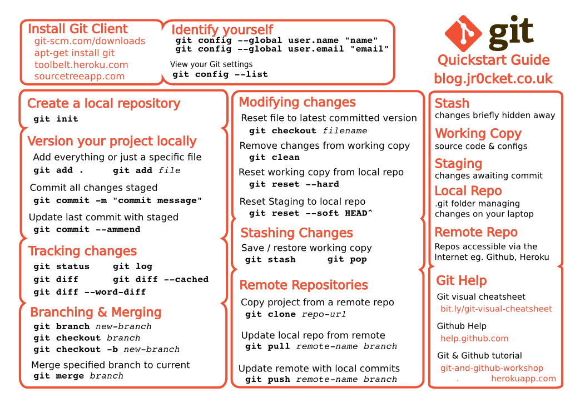
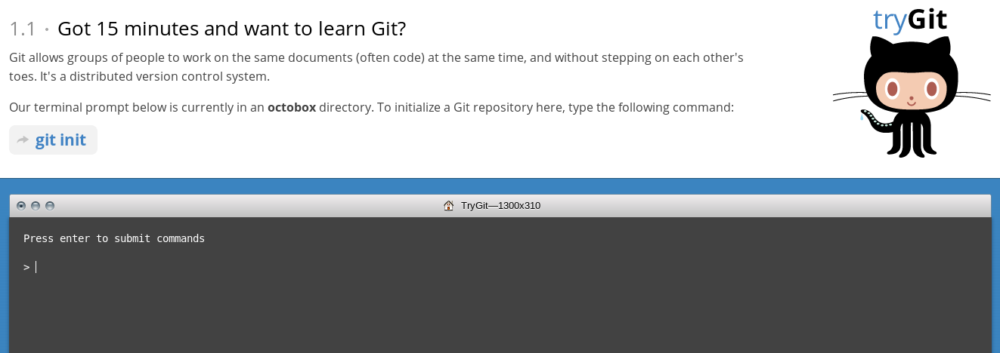
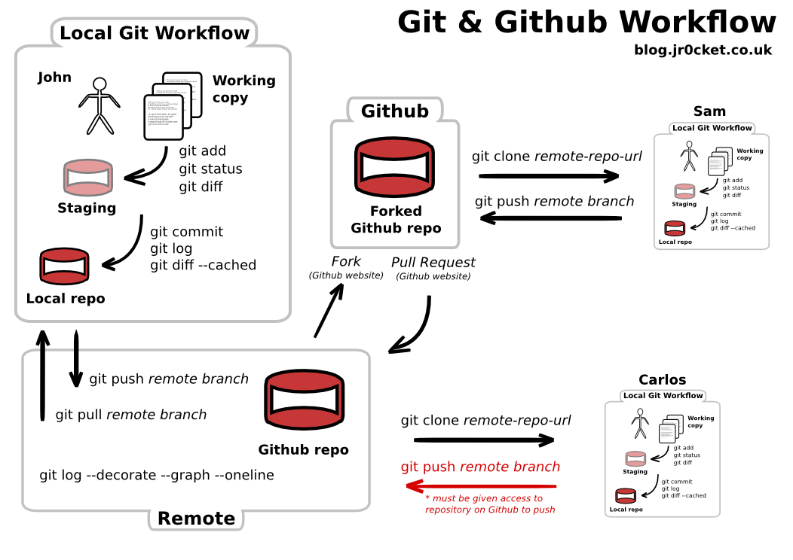
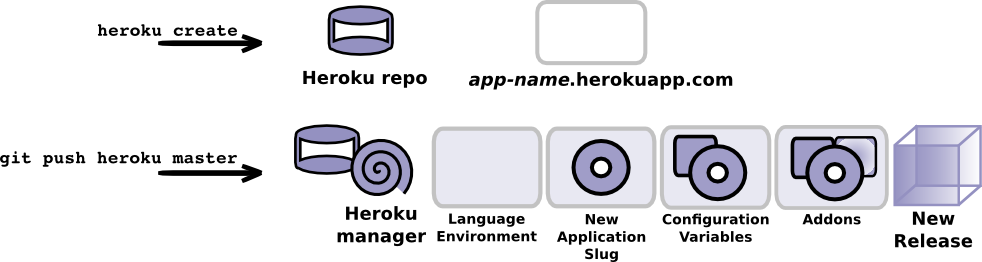

Kickstart you Hack with Git, Build tools & Heroku
John Stevenson
john@jr0cket.co.uk
What is the first thing you should do at a Hackathon?
Well, the first thing after you have…
- woken up
- found a team
- thought of an idea
- had a discusson about that idea…
Testing out your ideas
Using Git to manage code allows you to:
- experiment with ideas quickly
- use branching to experiment in code
- throw away code that is not wanted
- go back to the great idea you had right at the start
Create a Git repository
Create a local repository
git init
Or create a shared repo on Github & clone it
git clone git@github.com:/username/project
Git Quickstart Guide

Learn more with Try Git

Hack away with confidence
How do you manage all the moving parts
Collaborating on your app
Use Github to:
- Share a repository for code
- Use Issues to define features & work on bugs
- Use Github pages for docs / notes / designs
Github workflow

Build automation
Gives consistency for creating, building and running apps
- Yeoman & Grunt for JavaScript
- Graddle / Maven for Java
- Leiningen for Clojure
- Rake & Bundle for Ruby
Build tool demo
Lets play with:
- Yeoman
- Grunt
- Angular
# Create an app using Angularjs yo angular # Build the website grunt build
Consistent deployment with Heroku
- Deploy using Git
- Provides a standard build & deploy workflow
- Deploy as a team
Heroku workflow

What Heroku Provides
Helping Developers focus on their apps
Heroku has support for
- Polyglot Languages & frameworks
- Instantly scalability
- Consistent deployment
- Platform as a service
Extensive range of addons
Quick Demo
- Create an app from scratch (done)
- Create a local git repository
- Commit project code to local repository
- Create an Heroku app
- Git Push code to Heroku

What is the last thing you do at a Hackathon?
Demo your app
Avoid trying to wire everything up at the last minute :)
- a consistent deployment helps you focus on a good demo
Tweet about your app
Show the judges what you are up to by tweeting the URL for you live app
- get feedback during the event
Did the demo work?
Open the URL in a browser, or use the command:
heroku open
Thank you
Happy Hacking !!